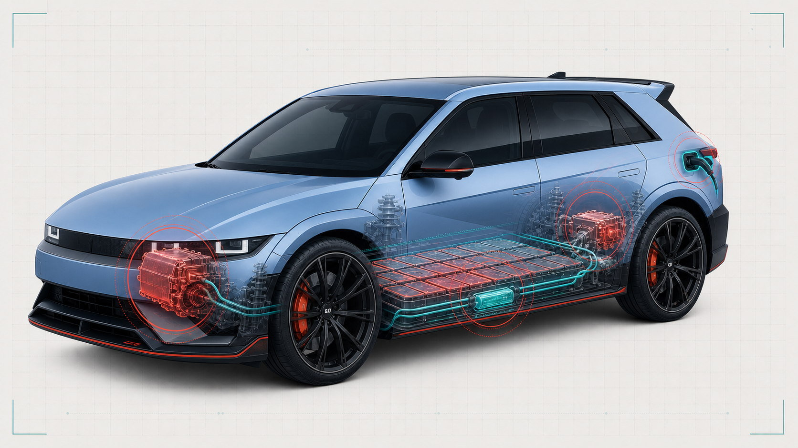

운행 가능 차량
142 / 150
↗ 어제보다 2대 증가실시간 차량 상태 분석 및 AI 진단 현황
근거 기반 우선순위와 안전 체크리스트
외부 수분 유입으로 인한 핀 부식 및 접촉 저항 증가.
배터리 팩 상단 연결부 미세 누수에 의한 단락 가능성.
펌프 제어 알고리즘 노이즈에 의한 오검출 가능성.
짧은 추가 질문으로 원인 후보와 점검 순서를 빠르게 좁힙니다.
현대 아이오닉 5 N의 이상 징후를 부위별로 확인합니다. 붉은 점을 선택해 점검 근거를 바꿔 보세요.

“볼트야” 또는 “볼트가드야”로 호출한 뒤, 긴급 알림이나 아이오닉 5 N 상태를 물어보세요.
예시: “볼트야, 긴급 알림 차량 알려줘”
또는 “볼트가드야, 아이오닉 5 N 현재 상태 알려줘”
실시간 및 배치 데이터를 안전하게 분석합니다.
CSV 파일을 드래그하여
드롭하세요
정상 범위 내에서 안정적입니다. 14:20에 단기 피크가 탐지됐습니다.
15:20 구간에서 임계값을 2.1V 초과했습니다.
89 / 100 — 냉각 루프 점검을 권장합니다.
진단부터 조치 결과까지 모든 기록을 연결합니다.
고장 모드, 공식 문서, FMEA를 버전으로 관리합니다.
공식 매뉴얼과 검증된 실험 데이터를 진단 근거로 연결합니다.
AI 기반 정밀 진단을 위해 현재 증상을 알려주세요.
선택 즉시 담당 부서로 연결되며, 안전 위험 항목은 긴급 대응 경로가 우선 적용됩니다.